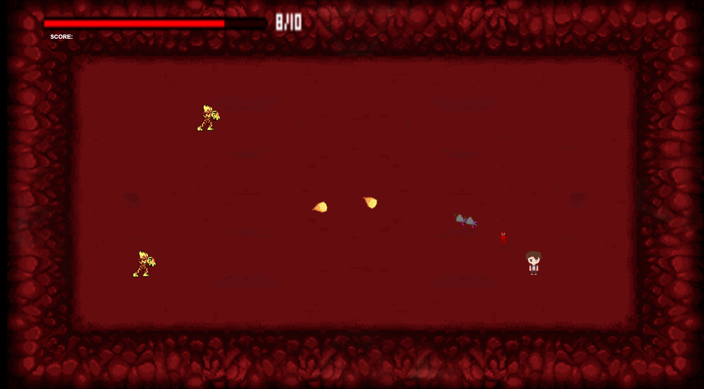
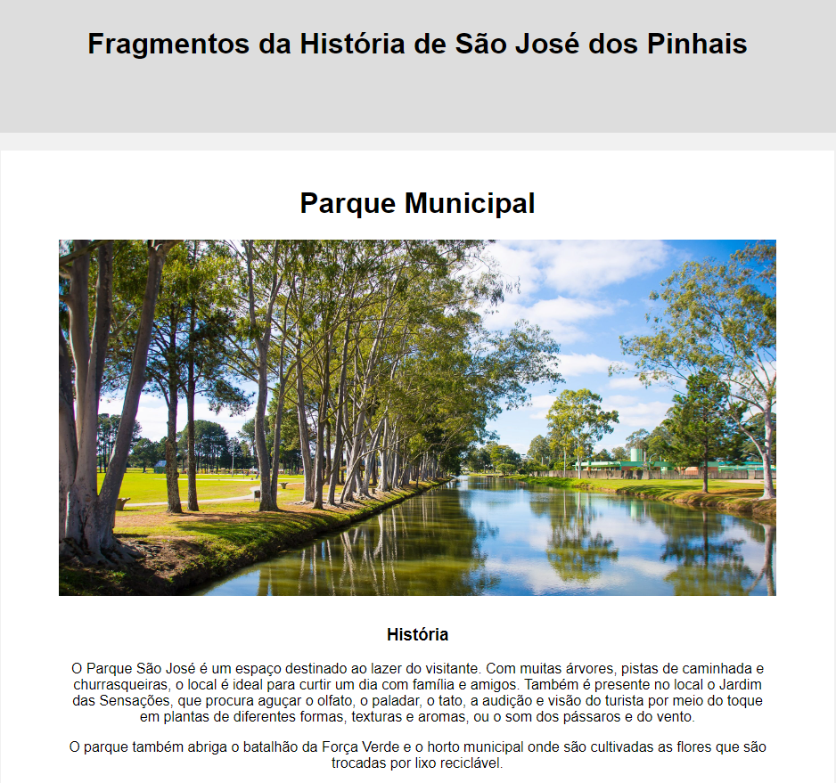
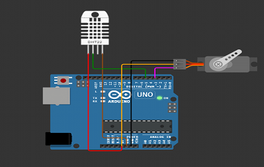
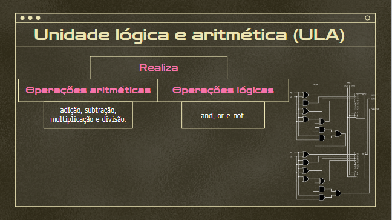
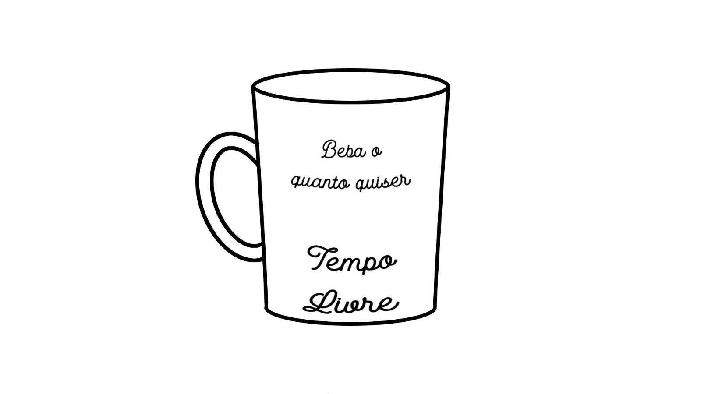
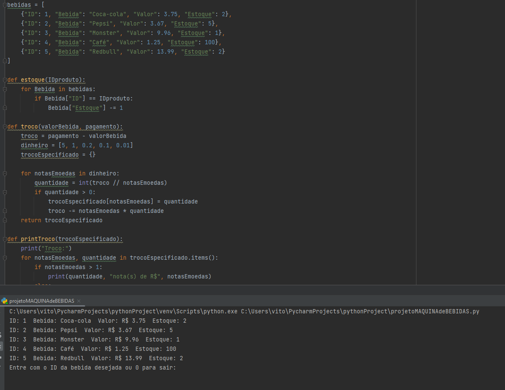
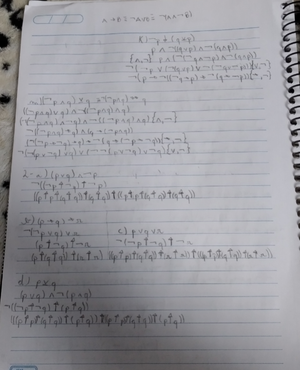

TDE - SITE WEB PESSOAL
1º Projeto - Jogo
- Primeiro projeto em grupo feito na disciplina de experiência criativa, com o objetivo de desenvolver um jogo com a ferramenta Construct 3.
- Funções em desenvolvimento da IA dos inimigos e no brainstorming.

3º Projeto - Programação Web
- Terceiro e último projeto em grupo, que tinha como meta produzir um site para resolver problemas de cidades metropolitanas de Curitiba.
- Destaque para a pesquisa de informações e curiosidades sobre São José dos Pinhais. Além da implementação delas em html.

Chuveiro inteligente
- Trabalho final feito na matéria de Sistemas Ciberfísicos, com o objetivo de criar um chuveiro que se adapte ao clima ambiente.
- Utilizando um arduino e outras ferrramentas, foi feito um mecanismo onde a temperatura da água do chuveiro seja sempre agradável ao usuário.
- Feito no site Wokwi.

Componentes da CPU
- Apresentação também feita em Sistemas Ciberfísicos, com o intúito de aprender mais sobre os componentes da CPU.
- Destaque para a unidade lógica e aritmética, tanto na pesquisa quanto na sua apresentação.

Apresentação Tempo Livre
- Última apresentação feita na matéria de Filosofia, com o tema "Tempo livre", escolhido pelo integrantes do gupo.
- Com perguntas feitas à pessoas desconhecidas, foi desenvolvida suas respostas durante a aula.
- Foto do produto utilizado como ferramenta lúdica.

Máquina de bebidas
- Projeto feito na disciplina de raciocínio algorítmico, com o objetivo de fazer uma máquina de bebidas na linguagem python.

Jokempo
- Primeiro projeto feito também em RA, linguagem idem.
Exercícios de Lógica
- Usando a manipulação sintática, a tarefa tinha como objetivo reescreever as fórmulas com conectivos diferentes.
